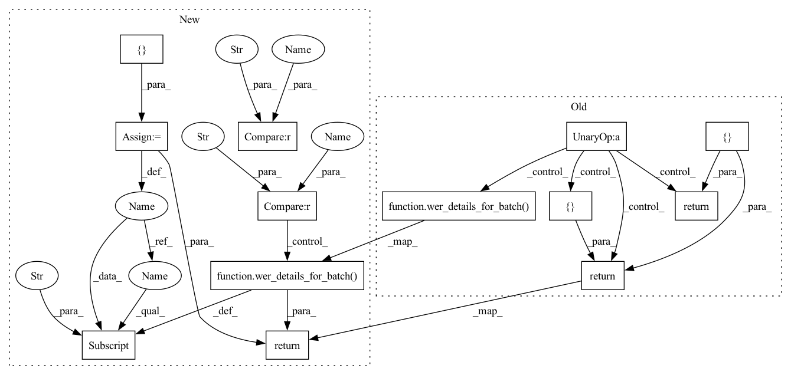

Pattern ID :36645

Before Change
// transducer tensor
predictions = predictions.expand(-1, -1, 2, -1)
loss = params.compute_cost(
predictions, phns, [lens.cuda(), phn_lens.cuda()]
)
if not train_mode:
seq = ctc_greedy_decode(predictions, lens, blank_id=-1)
phns = undo_padding(phns, phn_lens)
stats = {"PER": wer_details_for_batch(ids, phns, seq)}
return loss, stats
return loss
def on_epoch_end(self, epoch, train_stats, valid_stats):
print("Epoch %d complete" % epoch)
After Change
def compute_objectives(self, predictions, targets, stage="train"):
predictions, lens = predictions
ids, phns, phn_lens = targets
if stage == "train":
loss = params.compute_cost(
predictions,
phns.to(params.device).long(),
lens.to(params.device),
phn_lens.to(params.device),
)
stats = {}
if stage != "train":
predictions = predictions.squeeze(2)
loss = -predictions.squeeze(2).max(dim=-1)[0].sum(dim=-1).mean()
seq = ctc_greedy_decode(predictions, lens, blank_id=params.blank_id)
phns = undo_padding(phns, phn_lens)
stats["PER"] = wer_details_for_batch(ids, phns, seq)
return loss, stats
def on_epoch_end(self, epoch, train_stats, valid_stats):
print("Epoch %d complete" % epoch)
In pattern: SUPERPATTERN
Frequency: 3
Non-data size: 13
Instances
Fragment ID: 104278887
Project Name: speechbrain/speechbrain
Commit Name: f189c69c1ca7634a2bd3005af29425992493772b
Time: 2020-06-05
Author: a.heba@irit.fr
File Name: recipes/minimal_examples/neural_networks/ASR_Transducer/example_asr_transducer_experiment.py
M Class Name: TransducerBrain
N Class Name: TransducerBrain
M Method Name: compute_objectives(4)
N Method Name: compute_objectives(4)
M Parent Class: sb.core.Brain
N Parent Class: sb.core.Brain
M File Name: recipes/minimal_examples/neural_networks/ASR_Transducer/example_asr_transducer_experiment.py
N File Name: recipes/minimal_examples/neural_networks/ASR_Transducer/example_asr_transducer_experiment.py
M Start Line: 73
M End Line: 86
N Start Line: 70
N End Line: 86
'>
Before Change
def compute_objectives(self, predictions, targets, train_mode=True):
predictions, lens = predictions
ids, phns, phn_lens = targets
loss = params.compute_cost(predictions, phns, [lens, phn_lens])
if train_mode:
alignments = viterbi_aligner.calc_viterbi_alignments(phns, phn_lens)
print(alignments)
if not train_mode:
seq = ctc_greedy_decode(predictions, lens, blank_id=-1)
phns = undo_padding(phns, phn_lens)
stats = {"PER": wer_details_for_batch(ids, phns, seq)}
return loss, stats
return loss
def on_epoch_end(self, epoch, train_stats, valid_stats):
print("Epoch %d complete" % epoch)
After Change
ids, phns, phn_lens = targets
loss = params.compute_cost(predictions, phns, lens, phn_lens)
if stage == "train":
alignments = viterbi_aligner.calc_viterbi_alignments(phns, phn_lens)
print(alignments)
stats = {}
if stage != "train":
seq = ctc_greedy_decode(predictions, lens, blank_id=-1)
phns = undo_padding(phns, phn_lens)
stats["PER"] = wer_details_for_batch(ids, phns, seq)
return loss, stats
def on_epoch_end(self, epoch, train_stats, valid_stats):
print("Epoch %d complete" % epoch)
'>
Fragment ID: 104278886
Project Name: speechbrain/speechbrain
Commit Name: d704a0180edc6e49d4e1b3119375971a07154f84
Time: 2020-05-30
Author: rastorge@eos14.server.mila.quebec
File Name: recipes/minimal_examples/neural_networks/ASR_alignment/example_asr_alignment_experiment.py
M Class Name: AlignBrain
N Class Name: AlignBrain
M Method Name: compute_objectives(4)
N Method Name: compute_objectives(4)
M Parent Class: sb.core.Brain
N Parent Class: sb.core.Brain
M File Name: recipes/minimal_examples/neural_networks/ASR_alignment/example_asr_alignment_experiment.py
N File Name: recipes/minimal_examples/neural_networks/ASR_alignment/example_asr_alignment_experiment.py
M Start Line: 35
M End Line: 47
N Start Line: 35
N End Line: 47
'>
Before Change
outputs, seq = predictions
ids, phns, phn_lens = targets
loss = params.compute_cost(outputs, phns, [phn_lens, phn_lens])
if not train_mode:
phns = undo_padding(phns, phn_lens)
stats = {"PER": wer_details_for_batch(ids, phns, seq)}
return loss, stats
return loss
def fit_batch(self, batch):
inputs, targets = batch
After Change
return outputs
def compute_objectives(self, predictions, targets, stage="train"):
if stage == "train":
outputs = predictions
else:
outputs, seq = predictions
ids, phns, phn_lens = targets
// add one for eos
abs_length = torch.round(phn_lens * phns.shape[1])
phns = append_eos_token(phns, length=abs_length, eos_index=params.eos)
rel_length = (abs_length + 1) / phns.shape[1]
loss = params.compute_cost(outputs, phns, length=rel_length)
stats = {}
if stage != "train":
phns = undo_padding(phns, phn_lens)
stats["PER"] = wer_details_for_batch(ids, phns, seq)
return loss, stats
def fit_batch(self, batch):
inputs, targets = batch
'>
Fragment ID: 104278885
Project Name: speechbrain/speechbrain
Commit Name: 8fe7e9194cc497aa28a3c29498afbf823e800b7d
Time: 2020-06-02
Author: jjery2243542@gmail.com
File Name: recipes/minimal_examples/neural_networks/ASR_seq2seq/example_asr_seq2seq_experiment.py
M Class Name: seq2seqBrain
N Class Name: seq2seqBrain
M Method Name: compute_objectives(4)
N Method Name: compute_objectives(4)
M Parent Class: sb.core.Brain
N Parent Class: sb.core.Brain
M File Name: recipes/minimal_examples/neural_networks/ASR_seq2seq/example_asr_seq2seq_experiment.py
N File Name: recipes/minimal_examples/neural_networks/ASR_seq2seq/example_asr_seq2seq_experiment.py
M Start Line: 48
M End Line: 61
N Start Line: 50
N End Line: 67